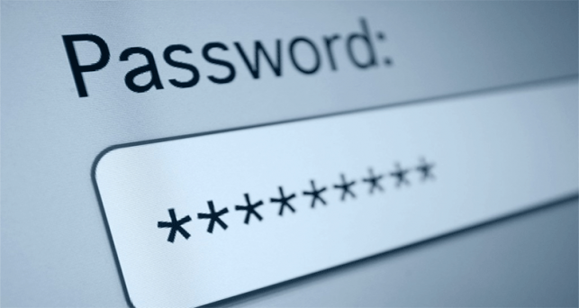

¿Cómo proteger contraseñas?
ContraseñasLas contraseñas siguen siendo la forma más común de proteger nuestras cuentas. Aunque existan métodos más avanzados como la autenticación biométrica o las llaves físicas, la mayoría de servicios dependen de una contraseña.
- Longitud: al menos 12 caracteres.
- Combinación: usa mayúsculas, minúsculas, números y símbolos cuando el servicio lo permita.
- No reutilizar: si una cuenta se filtra, reutilizar contraseñas multiplica el problema.
- Frases de paso (passphrases):combinaciones de palabras aleatorias son fáciles de recordar y seguras (p. ej. Cielo-Limon-44-Perro!).
Consejos concretos:
Evita contraseñas basadas en información pública (fechas de nacimiento, nombres).
Anota contraseñas en el gestor, no en notas sin cifrado.
Habilita la recuperación de cuenta con métodos seguros (correo alternativo protegido, autenticador de apps).
En conclusión
La combinación gestor + MFA + contraseñas largas te da una seguridad práctica y manejable en todas tus contraseñas.
